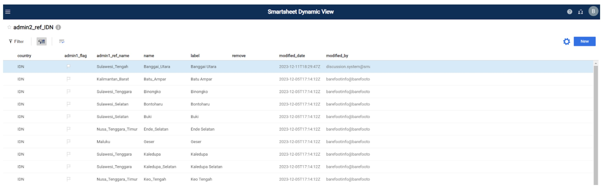
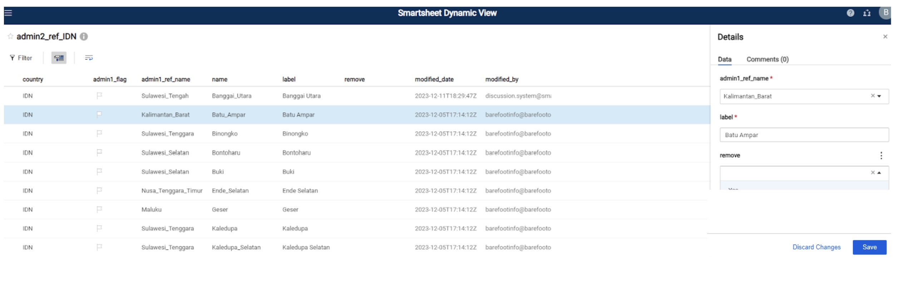
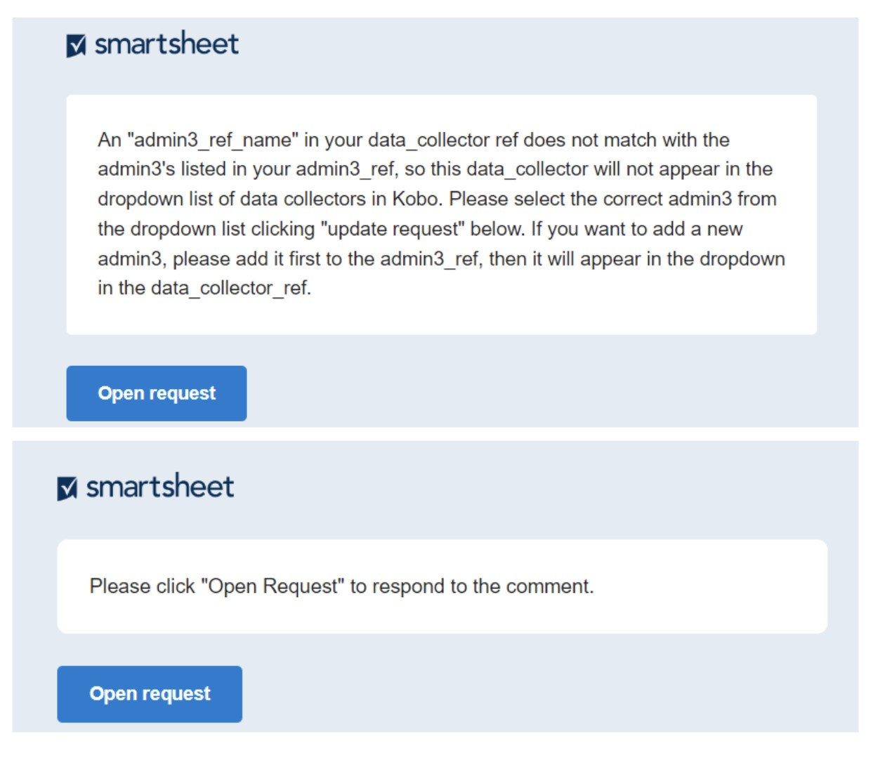
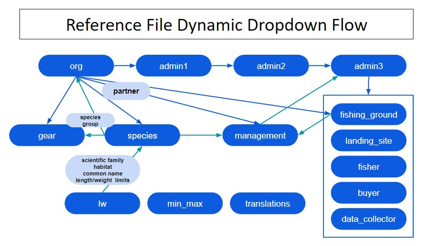

Reference Files
Fanavaozana Ny Rakitra Referansa
Ny rakitra referansa rehetra dia havaozina ao Amin’ny Smartsheet Dynamic View. Ny rakitra referansa dia miasa ho toy ny fidirana ho an’ny lisitry ny fihenam-bidy amin’ny endrika KoboToolbox ary misy angona izay ampiana amin’ny angon-drakitra master amin’ny alàlan’ny fidirana. Ahitana fampahalalana feno momba ny ambaratonga ara-pitantanana ny vondrom-piarahamonina mpanjono (firenena, faritany, distrika, vohitra), toerana fiantsonana, toeram-panjonoana, mpanjono, mpividy, mpanangona angon-drakitra, karazany, faritra fitantanana, karazana fitaovana ary fikambanana mpiara-miasa. Ireo dingana etsy ambany dia mamaritra ny fomba fanavaozana ireo rakitra referansa miaraka amin’ny fampahalalana vaovao.
Dingana 1: Mamorona kaonty smartsheet maimaim-poana.
Azo atao ny mamorona kaonty maimaimpoana ao amin’ny https://www.smartsheet.com/
Safidio ny”Andramo smartsheet maimaim-poana”
Dingana 2: Omeo Barefoot Ocean ny adiresy mailaka nampiasanao hamoronana ny kaontinao smartsheet.
Barefoot Ocean dia hizara ireo rakitra fanondroana mifandraika amin’ny fikambananao.
Raha te hijery ireo rakitra fanovozan kevitra dia mila miditra amin’ny Smartsheet Dynamic View ianao amin’ny fampiasana ny mari pahaizana smartsheet anao: https://dynamicview.smartsheet.com/login
Raha vao tafiditra Ao Amin’ny Dynamic View (fa tsy ny fampiharana smartsheet) dia hahita lisitry ny rakitra reference zaraina amin’ny kaontinao ianao (Sary 1).
Sary 1: Lisitry ny rakitra referansa Ao Amin’ny Dynamic View

Dingana 3: Tsindrio ny rakitra referansa hanaovana fanavaozana
Rehefa misokatra dia azonao atao ny manindry ny laharana tsirairay mba hanovana ny angon-drakitra efa misy, na tsindrio ny bokotra “Vaovao” eo amin’ny zoro ambony havanana mba hanampiana angona vaovao (Sary 2).
Ny tontonana antsipiriany dia hiseho eo amin’ny ilany havanana izay hampidiranao ny fampahalalana ilaina (Sary 3; Tabilao 1). Safidio ny” save ” eo amin’ny farany ambany ankavanan’ny tontonana details rehefa vita ny fanavaozana. Tsy mila mampandre Ny Barefoot Ocean ianao rehefa manao fanovana na fanampiny amin’ny takelaka ref. Ny dia ho natambatra ho azy amin’ny master reference files ary tafiditra ao Amin’ny kobo.
Raha hamela fanehoan-kevitra na hametraka fanontaniana amin’ny ekipan’ny Barefoot, safidio ny tabilao “Comments” ao amin’ny tontonana details. Ireo olona rehetra izay zaraina amin’ny rakitra fanondroana, anisan’izany ny Ekipan’ny Barefoot Ocean, dia hahazo fampandrenesana rehefa misy fanehoan-kevitra, ka tsy ilaina ny manisy marika olona manokana.
Sary 2: fomba Fijery Ohatra momba ny admin2_ref Amin’ny Fomba Fijery Mavitrika

Sary 3: ohatra ny fijerena ny tontonana admin2_ref details amin’ny Dynamic View

Dingana 4: Valio ny fangatahana fanavaozana rehefa tsy hita na diso ny angona, na hamaly ny fanehoan-kevitra.
Raha misy fampahalalana tsy feno na diso izay tena ilaina amin’ny fametrahana Ny Kobo dropdowns na ho an’ny joins, na raha misy fanehoan-kevitra atao ao amin’ny takelaka, dia halefa any amin’ny mpampiasa mety rehetra ny fangatahana fanavaozana, ka manosika azy ireo hanavao ny vaovao na hamaly ny fanehoan-kevitra (Sary 4). Amin’ny alàlan’ny default, ny olona rehetra manana fidirana amin’ny rakitra referansa dia hahazo ny fangatahana fanavaozana.
Ny fijerena mialoha ny angon-drakitra mila havaozina na valiana dia hiseho eo ambanin’ny hafatra mailaka, saingy tsy ho afaka hanavao ny angona mivantana amin’ny mailaka ianao
- Eo amin’ny farany ambany amin’ny mailaka, misy rohy mankany amin’ny “Mandehana any amin’ny takelaka”; na izany aza, voafetra ny fidirana amin’ny takelaka fototra. Azafady mba avereno jerena ny angon-drakitrao na valio Ny fanehoan-kevitra Amin’ny Alàlan’ny Fangatahana Misokatra.
Tsindrio ny bokotra” Open Request ” ao amin’ny hafatra mailaka.
Hisokatra ny varavarankelin’ny navigateur internet vaovao miaraka amin’ny fanamboarana endrika ho an’ny fidirana tsirairay (Sary 5)
Avereno jerena ireo saha BFO ary fenoy ireo saha azo ovaina.
Tsindrio manaraka eo amin’ny farany ambany amin’ny efijery mba hivezivezy amin’ny fidirana tsirairay izay mila havaozina.
Mba hialana amin’ny fidirana (ohatra, raha mbola tsy azonao antoka izay valiny hofidiana) tsindrio “Next” nefa tsy manao safidy ao amin’ny tsanganana azo ovaina. Hiseho ny fidirana manaraka izay mila havaozina.
Raha mila mivoaka ny pejy ianao na mijanona alohan’ny hanavaozana ny fidirana rehetra dia tokony hotehirizina ny safidinao amin’ny fotoana hanokafanao indray ny fangatahana. Rehefa manokatra hanohy dia tsindrio fotsiny Ny “Next” mandra-pahitanao fidirana mila havaozina.
Rehefa tonga amin’ny fidirana farany ianao dia tsindrio “Vita”. Hisy hafatra mipoitra hanontany raha Toa ianao ka ‘Vonona ny handefa ny fanavaozanao?’:
Tsindrio “Miverena” raha mila mandinika ianao
Kitiho ny “Alefaso Ny Fanavaozana” mba handefasana ny fanavaozanao.
Ny fanavaozanao dia ampidirina ho azy amin’ny rakitra reference ary azonao jerena Amin’ny Fomba Fijery Mavitrika
Raha sendra misy lesoka ianao amin’ny fotoana rehetra, manana fanontaniana, na mila fanohanana amin’ny fanavaozana ireo rakitra referansa, azafady mba mifandraisa aminay amin’ny katie@barefootocean.org na brittany@barefootocean.org.
Sary 4: Ohatra “Fangatahana Fanavaozana” mailaka rehefa mila ahitsy ny fampahalalana na mila valiana ny fanehoan-kevitra.

Tabilao 1: ny saha voalohany ao amin’ny rakitra referansa tsirairay. Ny karazana saha ” bfo ” dia tantanan’ny Barefoot Ocean ary tsy azo ovaina. Mba hangataka fanovana amin’ny iray amin’ireo saha” BFO”, azafady avelao ny fanehoan-kevitra. Ny saha misy karazana saha “azo ovaina” ihany no azo ovaina. Ny karazana saha “auto” dia mipetraka ho azy.
| Anaran’ny saha | Famaritana ny saha | Karazana saha |
|---|---|---|
| Ny rakitra referansa rehetra | ||
| latest_comment | Ity tsanganana ity dia mitahiry ny fanehoan-kevitra farany natao ho an’io laharana io. Raha hijery ny fifanakalozan-kevitra manontolo momba ny fanehoan-kevitra momba an’io laharana io, tsindrio fotsiny na aiza na aiza eo amin’ny laharana. Hiseho ny tontonana antsipiriany, toy ny Hita Ao amin’ny Sary 3. Tsindrio ny tabilao” Comments ” raha hijery ny fanehoan-kevitra rehetra momba an’io laharana io. | fiara |
| modified_date | Daty fanovana farany | fiara |
| modified_by | Mpampiasa nanao ny fanovana farany | fiara |
| active | azo ovaina | |
| remove | azo ovaina | |
| admin1_ref | ||
| country | Iso country code, izay kaody fampifangaroana litera ekena iraisam-pirenena | BFO |
| name | Anaran’ny admin1, ny ambaratonga ambony indrindra amin’ny fitantanana aorian’ny firenena (izany hoe faritany) tsy misy toerana sy tsy misy mari-piatoana, dia manasongadina fotsiny | BFO |
| label | Anaran’ny admin1, ny ambaratonga ambony indrindra amin’ny fitantanana aorian’ny firenena (izany hoe faritany) miaraka amin’ny toerana sy ny mari-piatoana. Aza manova ny marika raha tsy tena ilaina, satria mifototra amin’izany ny fidirana. | azo ovaina |
| partner_flag | Ho mena ny sainam-pirenena raha tsy misy ny sanda” mpiara-miasa ” ao amin’ny org_ref | BFO |
| partner | Anaran’ny mpiara-miasa tsy misy toerana ary tsy misy mari-piatoana, manasongadina fotsiny. Ny lisitry ny fihenam-bidy dia mifandray amin’ny tsanganana “anarana” ao amin’ny org_ref. | azo ovaina |
| admin2_ref | ||
| country | Iso country code, izay kaody fampifangaroana litera ekena iraisam-pirenena | BFO |
| name | Ny anaran’ny admin2, ny ambaratonga ambony indrindra aorian’ny admin1 (izany hoe distrika) tsy misy toerana sy tsy misy mari-piatoana, dia manasongadina fotsiny | BFO |
| label | Anaran’ny admin2, ny ambaratonga ambony indrindra aorian’ny admin1 (izany hoe distrika) miaraka amin’ny toerana sy ny mari-piatoana. Aza manova ny marika raha tsy tena ilaina, satria mifototra amin’izany ny fidirana. | azo ovaina |
| admin1_flag | Ho mena ny sainam-pirenena raha tsy misy ny sanda “admin1_ref_name” ao amin’ny admin1_ref | BFO |
| admin1_ref_name | Anarana Admin1 tsy misy toerana ary tsy misy mari-piatoana, manasongadina fotsiny. Ny lisitry ny fihenam-bidy dia mifandray amin’ny tsanganana “anarana” ao amin’ny admin1_ref. | azo ovaina |
| admin3_ref | ||
| country | Iso country code, izay kaody fampifangaroana litera ekena iraisam-pirenena | BFO |
| name | Ny anarana Admin2 sy admin3 dia mitambatra tsy misy toerana ary tsy misy mari-piatoana, fa manasongadina fotsiny.Ny admin3 no ambaratonga ambony indrindra aorian’ny admin2 (izany hoe vohitra). | BFO |
| label | Anaran’ny admin3, ny ambaratonga ambony indrindra aorian’ny admin2 (izany hoe vohitra) miaraka amin’ny toerana sy ny mari-piatoana. Aza manova ny marika raha tsy tena ilaina, satria mifototra amin’izany ny fidirana. | azo ovaina |
| admin1 | Anarana Admin1 miaraka amin’ny toerana sy mari-piatoana azo atao. Izany dia nalaina avy amin’ny admin1_ref sy auto populated mifototra amin’ny admin2 voafidy. | BFO |
| admin1_ref_name | Anarana Admin1 tsy misy toerana ary tsy misy mari-piatoana, manasongadina fotsiny. Izany dia nalaina avy amin’ny admin1_ref sy auto populated mifototra amin’ny admin2 voafidy | BFO |
| admin2_flag | Ho mena ny sainam-pirenena raha tsy misy ny sanda” admin2 ” ao amin’ny admin2_ref. | BFO |
| admin2 | Anarana Admin2 miaraka amin’ny toerana sy mari-piatoana azo atao. Ny lisitry ny fihenam-bidy dia mifandray amin’ny tsanganana “label” ao amin’ny admin2_ref. | azo ovaina |
| admin2_ref_name | Anarana Admin2 tsy misy toerana ary tsy misy mari-piatoana, manasongadina fotsiny. Izany dia nalaina avy amin’ny admin2_ref sy auto populated mifototra amin’ny admin2 voafidy. | BFO |
| admin3_lat | Latitude amin’ny admin3 | azo ovaina |
| admin3_long | Ny halavan’ny admin3 | azo ovaina |
| landings_mon | azo ovaina | |
| landings_prof | azo ovaina | |
| comm_prof | azo ovaina | |
| hhs | azo ovaina | |
| buyer_ref | ||
| country | Iso country code, izay kaody fampifangaroana litera ekena iraisam-pirenena | BFO |
| name | Anaran’ny mpividy tsy misy toerana ary tsy misy mari-piatoana, manasongadina fotsiny | BFO |
| label | Anaran’ny mpividy misy toerana sy mari-piatoana azo atao. Aza manova ny marika raha tsy tena ilaina, satria mifototra amin’izany ny fidirana. | azo ovaina |
| buyer_gender | Ny maha-lahy na maha-vavy ny mpividy; ‘male’ (lahy), ‘female’ (vavy), ‘nonbinary’ (tsy binary) na ‘business_nogender’ | azo ovaina |
| gender_flag | BFO | |
| admin1 | Anarana Admin1 izay ividianan’ny mpividy, miaraka amin’ny toerana sy ny mari-piatoana. Izany dia nalaina avy amin’ny admin1_ref sy auto populated mifototra amin’ny admin3_ref_name voafidy. | BFO |
| admin2 | Anarana Admin2 izay ividianan’ny mpividy, miaraka amin’ny toerana sy ny mari-piatoana. Izany dia nalaina avy amin’ny admin2_ref sy auto populated mifototra amin’ny admin3_ref_name voafidy. | BFO |
| admin3 | Anarana Admin3 izay ividianan’ny mpividy, miaraka amin’ny toerana sy ny mari-piatoana. Izany dia nalaina avy amin’ny admin3_ref sy auto populated mifototra amin’ny admin3_ref_name voafidy. | BFO |
| admin3_ref_name | Ny anarana Admin2 sy admin3 dia mitambatra tsy misy toerana ary tsy misy mari-piatoana, fa manasongadina fotsiny.Ny lisitry ny fihenam-bidy dia mifandray amin’ny tsanganana “anarana” ao amin’ny admin3_ref. | azo ovaina |
| admin3_flag | Ho mena ny sainam-pirenena raha tsy misy ny sanda” admin3_ref_name ” ao amin’ny admin3_ref. | BFO |
| fisher_ref | ||
| country | Iso country code, izay kaody fampifangaroana litera ekena iraisam-pirenena | BFO |
| name | Anaran’ny mpanjono tsy misy toerana ary tsy misy mari-piatoana, manasongadina fotsiny | BFO |
| label | Anaran’ny mpanjono misy toerana sy mari-piatoana azo atao. Aza manova ny marika raha tsy tena ilaina, satria mifototra amin’izany ny fidirana. | azo ovaina |
| fisher_gender | Ny maha-lahy na maha-vavy ny mpanjono; ‘male’ (lahy), ‘female’ (vavy), ‘nonbinary’ (tsy binary) na ‘business_nogender’ | azo ovaina |
| gender_flag | BFO | |
| admin1 | Anarana Admin1 izay ahazoan’ny mpanjono ny hazandranony, miaraka amin’ny toerana sy ny mari-piatoana azo atao. Izany dia nalaina avy amin’ny admin1_ref sy auto populated mifototra amin’ny admin3_ref_name voafidy. | BFO |
| admin2 | Anarana Admin2 izay ahazoan’ny mpanjono ny hazandranony, miaraka amin’ny toerana sy ny mari-piatoana azo atao. Izany dia nalaina avy amin’ny admin2_ref sy auto populated mifototra amin’ny admin3_ref_name voafidy. | BFO |
| admin3 | Anarana Admin3 izay ahazoan’ny mpanjono ny hazandranony, miaraka amin’ny toerana sy ny mari-piatoana azo atao. Izany dia nalaina avy amin’ny admin3_ref sy auto populated mifototra amin’ny admin3_ref_name voafidy. | BFO |
| admin3_ref_name | Ny anarana Admin2 sy admin3 dia mitambatra tsy misy toerana ary tsy misy mari-piatoana, fa manasongadina fotsiny.Ny lisitry ny fihenam-bidy dia mifandray amin’ny tsanganana “anarana” ao amin’ny admin3_ref. | azo ovaina |
| admin3_flag | Ho mena ny sainam-pirenena raha tsy misy ny sanda” admin3_ref_name ” ao amin’ny admin3_ref. | BFO |
| data_collector_ref | ||
| country | Iso country code, izay kaody fampifangaroana litera ekena iraisam-pirenena | BFO |
| name | Anaran’ny mpanangona angon-drakitra tsy misy toerana ary tsy misy mari-piatoana, manasongadina fotsiny | BFO |
| label | Anaran’ny mpanangona angon-drakitra misy toerana sy mari-piatoana azo atao. | azo ovaina |
| gender | Ny maha-lahy na maha-vavy ny mpanangona angon-drakitra; ‘male’ (lahy), ‘female’ (vavy), ‘nonbinary’ (tsy binary) na ‘business_nogender’ | azo ovaina |
| admin3_flag | Ho mena ny sainam-pirenena raha tsy misy ny sanda” admin3_ref_name ” ao amin’ny admin3_ref. | BFO |
| admin3_ref_name | Ny anarana Admin2 sy admin3 dia mitambatra tsy misy toerana ary tsy misy mari-piatoana, fa manasongadina fotsiny.Ny lisitry ny fihenam-bidy dia mifandray amin’ny tsanganana “anarana” ao amin’ny admin3_ref. | azo ovaina |
| landings_mon | Safidio Ny ” Eny ” raha tianao hiseho ao amin’ny dropdown ny mpanangona data ho an’ny endrika fanaraha-maso kobo landings. | azo ovaina |
| landings_prof | Safidio Ny “Eny” raha tianao hiseho ao amin’ny dropdown ny mpanangona data ho an’ny endrika mombamomba ny kobo landings | azo ovaina |
| hhs | Safidio Ny “Eny” raha tianao hiseho ao amin’ny dropdown ny mpanangona data ho an’ny endrika fanadihadiana ao An-tokantrano kobo | azo ovaina |
| comm_prof | Safidio Ny “Eny” raha tianao hiseho ao amin’ny dropdown ny mpanangona data ho an’ny endrika mombamomba ny vondrom-piarahamonina Kobo | azo ovaina |
| fishing_ground_ref | ||
| country | Iso country code, izay kaody fampifangaroana litera ekena iraisam-pirenena | BFO |
| name | Anaran’ny toeram-panjonoana tsy misy toerana sy mari-piatoana, manasongadina fotsiny | BFO |
| label | Anaran’ny toeram-panjonoana misy toerana sy mari-piatoana. Aza manova ny marika raha tsy tena ilaina, satria mifototra amin’izany ny fidirana. | azo ovaina |
| admin3_flag | Ho mena ny sainam-pirenena raha tsy misy ny sanda” admin3_ref_name ” ao amin’ny admin3_ref. | BFO |
| admin3_ref_name | Ny anarana Admin2 sy admin3 dia mitambatra tsy misy toerana ary tsy misy mari-piatoana, fa manasongadina fotsiny.Ny lisitry ny fihenam-bidy dia mifandray amin’ny tsanganana “anarana” ao amin’ny admin3_ref. | azo ovaina |
| partner_flag | Ho mena ny sainam-pirenena raha tsy misy ny sanda” mpiara-miasa ” ao amin’ny org_ref | BFO |
| partner | Anaran’ny mpiara-miasa tsy misy toerana ary tsy misy mari-piatoana, manasongadina fotsiny. Ny lisitry ny fihenam-bidy dia mifandray amin’ny tsanganana “anarana” ao amin’ny org_ref. | azo ovaina |
| latitude | Latitude amin’ny toeram-panjonoana | azo ovaina |
| longitude | Longitude ny toeram-panjonoana | azo ovaina |
| gear_ref | ||
| country | Iso country code, izay kaody fampifangaroana litera ekena iraisam-pirenena | BFO |
| name | Anarana eo an-toerana ny fitaovana tsy misy toerana sy tsy misy mari-piatoana, manasongadina fotsiny | BFO |
| label | Anarana eo an-toerana amin’ny fitaovana misy toerana sy mari-piatoana azo atao. Aza manova ny marika raha tsy tena ilaina, satria mifototra amin’izany ny fidirana. | azo ovaina |
| gear_global | Ny anarana anglisy amin’ny fitaovana tsy misy toerana sy tsy misy mari-piatoana, dia manasongadina fotsiny. Lisitry ny fihenam-bidy efa voafaritra mialoha ity. Misafidiana iray izay mifanaraka tsara amin’ny fitaovana eo an-toerana, na maneho hevitra raha tsy azonao antoka. | azo ovaina |
| gear_detail | Famaritana ny fitaovana | azo ovaina |
| species_group | Ny vondrona karazana no lasibatry ny fitaovana. Raha mikendry karazana maro ny fitaovana iray, dia mamorona laharana vaovao ho an’ny vondrona karazany tsirairay. Ny lisitry ny fihenam-bidy dia mifandray amin’ny tsanganana “species_group” ao amin’ny species_ref. | azo ovaina |
| species_flag | Ho mena ny sainam-pirenena raha tsy misy ny” species_group ” voafidy ao amin’ny species_ref. | BFO |
| partner | Anaran’ny mpiara-miasa tsy misy toerana ary tsy misy mari-piatoana, manasongadina fotsiny. Ny lisitry ny fihenam-bidy dia mifandray amin’ny tsanganana “anarana” ao amin’ny org_ref. | azo ovaina |
| partner_flag | Ho mena ny sainam-pirenena raha tsy misy ny sanda” mpiara-miasa ” ao amin’ny org_ref | BFO |
| landing_site_ref | ||
| country | Iso country code, izay kaody fampifangaroana litera ekena iraisam-pirenena | BFO |
| name | Anaran’ny toerana fipetrahana tsy misy toerana ary tsy misy mari-piatoana, manasongadina fotsiny | BFO |
| label | Anaran’ny toerana fiantsonana misy toerana sy mari-piatoana azo atao | azo ovaina |
| admin3_flag | Ho mena ny sainam-pirenena raha tsy misy ny sanda” admin3_ref_name ” ao amin’ny admin3_ref. | BFO |
| admin3_ref_name | Ny anarana Admin2 sy admin3 dia mitambatra tsy misy toerana ary tsy misy mari-piatoana, fa manasongadina fotsiny.Ny lisitry ny fihenam-bidy dia mifandray amin’ny tsanganana “anarana” ao amin’ny admin3_ref. | azo ovaina |
| management_ref | ||
| country | Iso country code, izay kaody fampifangaroana litera ekena iraisam-pirenena | BFO |
| partner_ID | Anaran’ny mpiara-miasa tsy misy toerana ary tsy misy mari-piatoana, manasongadina fotsiny. Ny lisitry ny fihenam-bidy dia mifandray amin’ny tsanganana “anarana” ao amin’ny org_ref. | azo ovaina |
| partner_flag | Ho mena ny sainam-pirenena raha tsy misy ny sanda” mpiara-miasa ” ao amin’ny org_ref | BFO |
| management_id_unique | BFO | |
| management_id | Anarana tsy manam-paharoa amin’ny faritra fitantanana misy toerana sy mari-piatoana azo atao. Aza manova ny anarana raha tsy tena ilaina, satria mifototra amin’izany ny fidirana. | azo ovaina |
| admin3_fish | azo ovaina | |
| admin3_fish_flag | BFO | |
| admin3_govern | azo ovaina | |
| admin3_govern_flag | BFO | |
| management_fishing_ground | azo ovaina | |
| fishing_ground_flag | BFO | |
| management_method | azo ovaina | |
| regulation_type | azo ovaina | |
| target_group | azo ovaina | |
| target_species | azo ovaina | |
| species_flag | BFO | |
| target_habitat | azo ovaina | |
| management_area_ha | Haben’ny faritra tantanana refesina amin’ny hektara (ha) | azo ovaina |
| close_date | Daty famaranana ny faritra tantanana | azo ovaina |
| open_date | Daty fanokafana ny faritra tantanana | azo ovaina |
| management_lat | Latitude ny faritra fitantanana | azo ovaina |
| management_long | Longitude ny faritra fitantanana | azo ovaina |
| org_ref | ||
| country | Iso country code, izay kaody fampifangaroana litera ekena iraisam-pirenena | BFO |
| name | Anaran’ny mpiara-miasa/fikambanana tsy misy toerana ary tsy misy mari-piatoana, manasongadina fotsiny | BFO |
| label | Anaran’ny mpiara-miasa/fikambanana misy toerana sy mari-piatoana azo atao. Aza manova ny marika raha tsy tena ilaina, satria mifototra amin’izany ny fidirana. | azo ovaina |
| species_group | Manangona angon-drakitra momba ny karazana vondrona ny mpiara-miasa. Ny lisitry ny fihenam-bidy dia mifandray amin’ny tsanganana “species_group” ao amin’ny species_ref. Safidio ny vondrona rehetra raha tiany hiseho ny karazana rehetra ao amin’ny species_ref. | azo ovaina |
| species_ref | ||
| country | Iso country code, izay kaody fampifangaroana litera ekena iraisam-pirenena | BFO |
| partner | Anaran’ny mpiara-miasa tsy misy toerana na mari-piatoana, manasongadina fotsiny. Ny mpiara-miasa no manivana ny fihenan’ny karazany. Misy firenena sasany manana mpiara-miasa maro izay mizara lisitry ny karazany. Amin’izay dia ho hitanao ny kaody firenena fa tsy ny mpiara-miasa, ary ny lisitry ny karazana iray manontolo dia haseho ho an’ny mpiara-miasa rehetra ao amin’io firenena io, raha tsy hoe misy vondrona karazana voafaritra ao amin’ny tsanganana “species_group” ao amin’ny org_ref. | BFO |
| habitat | Karazana toeram-ponenana mifandray amin’ny karazany | BFO |
| name | Anarana sy anaran’ny karazany eo an-toerana miaraka amin’ny tsipika ambany, tsy misy mari-piatoana na toerana hafa. | BFO |
| label | Anarana eo an-toerana miaraka amin’ny anaran’ny karazany eo amin’ny fononteny | BFO |
| species_group | Ireo karazany voasokajy ho vondrona mifototra amin’ny biolojian’izy ireo tsy misy toerana na mari-piatoana, dia manasongadina fotsiny. Ity saha ity dia ampiasaina hanampiana amin’ny sivana safidy valiny sasany ao Amin’ny kobo. | BFO |
| species_flag | Ho mena ny sainam-pirenena raha tsy voatonona ao amin’ny gear_ref ny “species_group” voafidy. Midika izany fa ny fitaovana rehetra voatanisa ao amin’ny gear_ref dia hiseho ho an’ity vondrona karazana ity. Mba hampisehoana fotsiny ireo fitaovana mikendry ity vondrona karazana ity, azafady ampio ny vondrona karazana amin’ny gear_ref. | BFO |
| local_name | Anaran’ny karazana eo an-toerana miaraka amin’ny toerana sy mari-piatoana azo atao | azo ovaina |
| admin1-3 | azo ovaina | |
| common_english | Anarana iombonana amin’ny teny anglisy miaraka amin’ny toerana sy ny mari-piatoana | BFO |
| scientific_family | Anaran’ny fianakaviana amin’ny karazana iray misy toerana sy mari-piatoana azo atao | BFO |
| scientific_species | Anarana siantifika amin’ny karazana misy habaka sy mari-piatoana azo atao. Raha tsy fantatra ny karazany, dia azo ampidirina ao koa ny karazana na ny fianakaviana. Raha ny karazana ihany no fantatra, soraty ny anaran’ny karazana arahin’ny “sp” (mifanohitra amin’ny “spp” na sp.”). Raha ny fianakaviana ihany no fantatra dia soraty ny anaran’ny fianakaviana (Izany hoe lutjanidae). | azo ovaina |
| length_limit_max | t1.133.1 | BFO |
| length_limit_min | t1.133.2 | BFO |
| weight_limit_max | t1.133.3 | BFO |
| weight_limit_min | t1.133.4 | BFO |
| avg_weight | t1.133.5 | BFO |
| translations_ref | ||
| english | Ny dikanteny anglisy ho an’ny” add new”,” don’t know”,” not for sale”, sns. | BFO |
| country language | Ny fandikan-teny amin’ny fiteny country ho an’ny “add new”, “don’t know”, “not for sale”, sns. | azo ovaina |
| ref_sheet | Ny taratasy fanovozan kevitra ny fandikan teny dia hiaraka amin’ny hiseho ao amin’ny dropdown mety ao Kobo | BFO |
| min_max_ref | ||
| country | Iso country code, izay kaody fampifangaroana litera ekena iraisam-pirenena | BFO |
| partner | Anaran’ny mpiara-miasa tsy misy toerana na mari-piatoana, manasongadina fotsiny. | BFO |
| min | Ny vidiny ambany indrindra mifototra amin’ny species_group | azo ovaina |
| max | Ny vidiny ambony indrindra mifototra amin’ny species_group | azo ovaina |
| species_group | Mihatra amin’ny vondrona karazana ny fampitandremana min/max. Mba hanampiana vondrona vaovao, azafady mba maneho hevitra ary ampahafantaro ny bfo. | BFO |
| category | Vidiny isaky ny kilao na vidiny isaky ny olona (ny fampitandremana ny lanjan’ny karazana sy ny halavany dia ampiharina amin’ny faran’ny aoriana amin’ny alàlan’ny angona avy amin’ny literatiora) | azo ovaina |
| processing | t1.144 | azo ovaina |
| lw_ref | ||
| species | Anarana siantifika amin’ny karazana misy habaka sy mari-piatoana azo atao. Raha tsy fantatra ny karazany, dia azo ampidirina ao koa ny karazana na ny fianakaviana. Raha ny karazana ihany no fantatra, soraty ny anaran’ny karazana arahin’ny “sp” (mifanohitra amin’ny “spp” na sp.”). Raha ny fianakaviana ihany no fantatra dia soraty ny anaran’ny fianakaviana (Izany hoe lutjanidae). | BFO |
| genus | t1.145 | BFO |
| family | t1.146 | BFO |
| common_name | t1.147 | BFO |
| species_group | t1.148 | BFO |
| avg_k | t1.149 | BFO |
| avg_k_type | t1.150 | BFO |
| a | t1.151 | BFO |
| b | t1.152 | BFO |
| a_b_ref | t1.153 | BFO |
| a_b_type | t1.154 | BFO |
| lmax | t1.155 | BFO |
| max_length_type | t1.156 | BFO |
| lmax_ref | t1.157 | BFO |
| length_conversion_a | t1.158 | BFO |
| length_conversion_b | t1.159 | BFO |
| lmax_tl | t1.160 | BFO |
| trophic_level | t1.161 | BFO |
| vulnerability | t1.162 | BFO |
| trophic_group | t1.163 | BFO |
| functional_group | t1.164 | BFO |
| group_size | t1.165 | BFO |
| loo | t1.166 | BFO |
| lmat | t1.167 | BFO |
| lmat_type | t1.168 | BFO |
| lmat_ref | t1.169 | BFO |
| final_type | t1.170 | BFO |
| final_lmax | t1.171 | BFO |
| calc_loo | t1.172 | BFO |
| calc_lmat | t1.173 | BFO |
| final_lmat | t1.174 | BFO |
| calc_limit_min | t1.175 | fiara |
| length_limit_max | t1.176 | fiara |
| length_limit_min | t1.177 | fiara |
| weight_limit_max | t1.178 | fiara |
| weight_limit_min | t1.179 | fiara |
| avg_weight | t1.180 | fiara |
| avg_weight_refs | t1.181 | BFO |
| habitat_deepwater | t1.182 | BFO |
| habitat_reef | t1.183 | BFO |
| habitat_mangrove | t1.184 | BFO |
| habitat_seagrass | t1.185 | BFO |
| habitat_mud | t1.186 | BFO |
| habitat_sand | t1.187 | BFO |
| habitat_estuary | t1.188 | BFO |
Fanontaniana Apetraka Matetika:
- Raha vao manampy admin vaovao aho, hafiriana vao miseho ao amin’ny dropdown ho an’ny admin2?
- Haharitra 15 minitra eo ho eo vao misy fidirana vaovao ao amin’ny dynamic dropdowns. Izany dia mihatra amin’ny fihenan’ny admin2 ao amin’ny admin3_ref, ny fihenan’ny species_group ao amin’ny gear_ref, ny fihenan’ny admin3 ao amin’ny buyer_ref, fisher_ref, data_collector, sns. Jereo ny Sary 5 ho an’ny lisitra feno ny fihenan’ny dinamika sy ny fizotran’ny asany amin’ny alàlan’ny rakitra referansa.
- Raha vao manampy na manavao rakitra reference aho, hafiriana vao miseho ny fanavaozana ao Amin’ny fanadihadiana Kobo?
- Tokony hahita endrika kobo nohavaozina ianao ao anatin’ny 12-24 ora eo ho eo.
- Ahoana no tokony hanoratana ny anaran’ny mpividy, mpanjono ary mpanangona angona?
- Raha ny tokony ho izy, ny anarana dia tokony ho tokana araka izay azo atao ho an’ny tsirairay ary ahitana ny anarany voalohany, ny anarany farany ary ny anaram-bosotra. Raha tsy te hizara ny anarany feno ny olona iray dia azonao atao koa ny mampiasa ny litera voalohany na voalohany amin’ny anarany farany.
Fifandraisana dynamic dropdown eo amin’ny rakitra reference.
